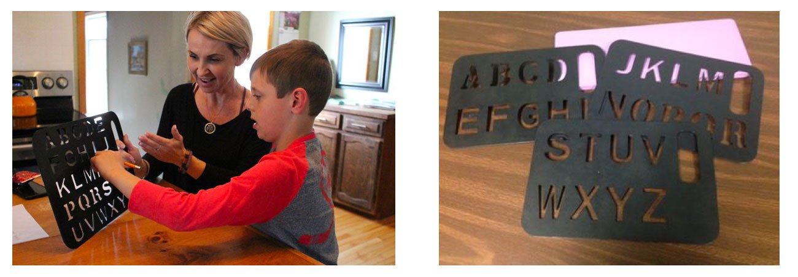

Received 2nd Place in the Convergence Innovation Competition
April 11th, 2017
Out of the 55 teams that have been selected as finalists for the CIC competition held by Georgia Tech Research Network Operations Center (RNOC) and the Institute for People and Technology (IPaT), we received 2nd place in the "Life Long Health and Well-Being" category.
The products were evaluated by over 30 judges from a variety of different companies around Atlanta.
For more details about the project, please read the design process and watch the video which will help you understand better of our idea.
View CIC Winners of Spring 2017
View Press Release by IPaT

Overview
Objective
A Responsive Letterboard aimed to help Autism Spectrum Disorder. When the child presses on the letter, in real-time, the letter will transfer to the Web User Interface to allow the clinicians to view the data.
Approach
Georgia Tech research group of four engineers with different backgrounds came together to design a responsive letter board for autistic children. Our team investigated the current use-case of letterboards. We evaluated stakeholders, determined their needs, then designed, laser cut and programmed a brand new working board with wifi capability.
My Role
As a team, we all participated in the initial research phase. Then, I focused on creating wireframes with Balsamiq Mockups so that I could design the UI of the web interface. After I designed it, I developed the web view with HTML/CSS and JS. After that, I focused on retrieving data from the back-end which initially would be passed on by the responsive letterboard.
Duration
January 2017 - May 2017
Project Team
Geunbae Lee | Vedant Das Swain | Fereshteh Shamiri | Anisha Bhandari
Tools
Balsamiq Mockups | Sketch | HTML/CSS/JS | Laser Cutter | Arduino | PCB Board | Flask
Links
Process
Introduction
The Rapid Prompting Method (RPM) is a method to help children with Autism Spectrum Disorder who cannot write the ability to communicate their thoughts. Initially, Rapid Prompting Method, was developed by Soma Mukhopadhyay, an Indian mother who wanted to teach her non-verbal son, Tito, who has austim, to express himself and expand his mind. By using this method, Soma was able to teach Tito how to read, write and type. The main objective of RPM is help “verbal and written expression.”

RPM is a method that through practice, patience and consistency can be used by parents and professionals with their students. Incorporating a daily discipline of using the method for academic teaching and to introduce the concepts into the student's daily life is best. The process of RPM is quite simple: a teacher gives a short lesson on a topic, asks a question and then elicits a response using verbal, auditory, or visual prompts. The child will answer based on the teacher’s question by spelling out the letters written on the letterboard. RPM, by using the letterboard has been proven to have positive effect on children with Autism. Eventually, students learn to provide their responses by either spelling, handwriting and/or speaking, leading towards open-ended communication.
Research
We visited local elementary schools and houses to meet Autistic children and their parents, caregivers or clinicians. During our visits, we attended and viewed the Rapid Prompting Method sessions done with the Autistic children using the currently existing letterboards. From doing so, we were able to get various insights by understanding how the clinicians or the caregiver communicate with the Autistic children and also what the general flow (process) would be like. Moreover, by conducting several unstructured interviews along the way, we discovered a few things:
• Since there is no technology involved (only physical letterboards), it's tough to collect data of how the child is doing
• No data means, the clinicians or the caregivers have limitations to conduct much more productive sessions or to customize sessions
Design and Engineering
The main objective of our project was to integrate an existing piece of hardware with a sleek interface for the facilitators, teachers and parents of autistic children. A well designed user interface and sophisticated hardware artefact needed to communicate in order to work in unison. This requires a quick and efficient backend that is reliable and easy to configure.
For the purpose of our work we decided to develop our backend server on Flask. This is a simple Python based framework that can be easily hosted and is rather lightweight compared to other such frameworks in the open source world. A Python based framework not only makes it easy for future collaborators to tinker with this, as Python is a fairly popular language, it also provides the option to include various versatile features from existing libraries for future implementations.
This backend server is based on the REST API architecture and allows both GET and POST requests on specific handles. These requests are used by the interface and the responsive letterboard respectively to communicate with the server. In order to support quick real-time transactions between what a child touches on the board and what is displayed - the backend maintains a simple tuple based data structure that keeps a record of <timestamp, character>.
The frontend JS uses regular interval AJAX query to continuously “ping” the backend with GET requests and receive the <timestamp, character>, that is accordingly updated on the user-facing interface. The JS is also robust enough to check the incoming characters from the letterboard with the characters that should be spelt based on the word the facilitator inputs. This happens with the help of using two different pointers on two different arrays - one for the word entered by the teacher and one for the incoming characters from the letterboard. This dual cursor correction allows us to measure the difference between selected and actual character, which in turn helps us calculate the accuracy of the child’s response in real time.
By design this server can be easily hosted locally on the personal interface by the users. However, this is also light enough to push onto a hosting app and use a simple cloud data structure like SQLite.
Hardware
Hardware Components:
Our responsive letterboard has three major components:
• MPR121 Capacitive Touch Sensor Breakout
• Feather HUZZAH ESP 8266 Wi Fi module with built-in battery charging and JST jack
• Lithium Polymer Battery
The capacitive touch sensor used here has twelve channel which means it can handle twelve individual touch pads. Since there are twenty-six letters in our board, we have considered specific grid architecture that enables us using just eleven channels of the sensor. Such implementation is explained in next section and shown in figure . Adding Wi-Fi module into circuit allows sending collected data from capacitive touch sensor, to technician’s/ trainer’s laptop in a wireless mode. More importantly, since an ESP8622 Wi-Fi microcontroller is embedded in Feather HUZZAH, the microcontroller can be programmed using Arduino IDE. To make the board easily portable, a 3.7 V Lithium polymer battery is used to manage power.
Hardware Design and Implementation Process:
Our responsive letterboard has three major components:
• Create a Grid of Conductors
• Design Printed Circuit Board (PCB) in Eagle (Circuit Design Software)
• Fabricate PCB Board
The hardware part of this interactive letterboard consists four specific layers. First layer which user interact with it as a physical interface, appears with alphabets. second substrate is a grid of aluminum foils attached to the intersection of conductive wires in rows and columns. Third substrate is combination of five rows and 6 columns. There is an isolator between conductive wires in rows and conductive wires in columns. However, there are holes on paper which is an isolator sheet here. By having these holes, sensing the touch is possible since, touching the letter provide a tuple of two touch channels in Capacitive touch sensor. Adding the isolator in between is required since we need to avoid interference in two channels’ capacitance.
Web Interface
Wireframe & Ideation
Initial Screen View
Adding Word to List: The clinician or the caregiver will be able to add words into the list. When each of the words are clicked, the session will start in which the Autistic child has to spell out the word by each letters.
Easy-to-view Data: As data is being collected and recorded, these simple data representations will allow the clinicians or the caregivers to see how the Autistic child is doing. This is also beneficial for future purposes to view each aggregated data for any Autistic children.
Real-time Letter View: For the second half (below) of the web interface, the clinicians or the caregivers will be able to view real-time data which are the letters that are being pressed by the Autistic child. As soon as one of the word is pressed to initiate the session, the corresponding word will be displayed in a larger font. As the letters are being touched in aiming to spell out the word, the box will be filled with green color if correct or red if incorrect (and the letters will be shown as well). Lastly, the prompted word will be shown in a gray box. The array of boxes are scrollable, enabling the clinicians or the caregivers to browse through the aggregated data (letters).
Real-time Touch View: Just below the straight line of boxes displaying the aggregate real-time data of the correct and incorrect letters, there will be a metaphoric design of the letterboard (hardware) to allow clinicians to easily see which letters are being touched currently. The last letter touched will be displayed in orange.
During Active Session
User Flow
Conclusion
The RPM method has proven to be effective for hundreds of autistic non-verbal children around the world. Our team put in weeks of effort to design the board shown. The design is robust, simple to use and lightweight. Our UI and live wireless data transfer has not been done before with the RPM board. However more user testing is required and discussions with stakeholders to determine if our product is viable for market.
Special thank you to Dr. Gregory Abowd and Ivan Rueibo for working with our team and allowing us to work with your children. Also thank you Dr. Ellen Do for giving us creative freedom to explore out ideas around this project.